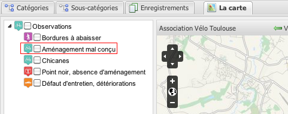
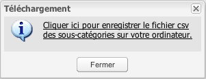

Les sous-catégories
L'onglet de gestion des sous-catégories permet de gérer toutes les informations relatives à une sous-catégorie :
- le libellé ;
- l'icône ;
- l'affichage ;
- la proposition publique.
Une sous-catégorie est définie par :
- un numéro d'identification - non modifiable ;
- un libellé - modifiable ;
- une appartenance à une catégorie - modifiable ;
- une icône - modifiable ;
- un attribut d'affichage - modifiable ;
- un attribut de proposition publique (pour permettre les propositions depuis l'interface publique)- modifiable.
La modification du champ 'Libellé' se fait grâce à un double-clic sur la cellule et en modifiant le contenu.
Une fois la modification effectuée il suffit de cliquer en-dehors de cette cellule pour que la modification prenne effet immédiatement en base de données.
### Le libellé est l'information présente dans l'arbre des couches de la carte précédée de l'icône :

### Un double-clic sur l'icône ouvre une boîte se sélection qui permet de choisir l'icône associée à la sous-catégorie.
La liste de la boîte de sélection est définie dans l'onglet Icône - cf. le mode d'emploi pour ces dernières.
### L'affichage de la sous-catégorie est modifiable grâce à la case à cocher.
Il est ainsi possible de travailler sur des enregistrements et décider de ne les afficher que lorsque ces derniers seront complétement renseignés par exemple.
La création d'une nouvelle sous-catégorie se fait en cliquant sur le bouton 'Ajouter une nouvelle sous-catégorie' :
Pour ajouter la nouvelle sous-catégorie en base de données, il est nécessaire de renseigner le libellé, l'icône et la catégorie dont dépend cette sous-catégorie, de cocher ou non les attributs d'affichage et de proposition publique et de cliquer sur le bouton 'Enregistrer' pour créer la sous-catégorie ; une fenêtre d'alerte renseigne de l'ajout en base de données :
La suppression d'une sous-catégorie se fait en sélectionnant la ou les sous-catégorie(s) - la sélection multiple est possible avec les touches Ctrl et Shift du clavier - à supprimer et en cliquant sur le bouton 'Supprimer la sélection', une fenêtre de confirmation s'ouvre :
A des fins de sécurité la suppression en cascade n'est pas autorisée - il faut au préalable supprimer tous les enregistrements dépendants de la sous-catégorie avant de pouvoir la supprimer. Dans ce cas vous obtienderez une fenêtre similaire à celle-ci :
Il est possible de générer un export au format csv des sous-catégories en cliquant sur le bouton 'Télécharger la liste des sous-catégories' :

Cette action générera un fichier csv téléchargeable :
